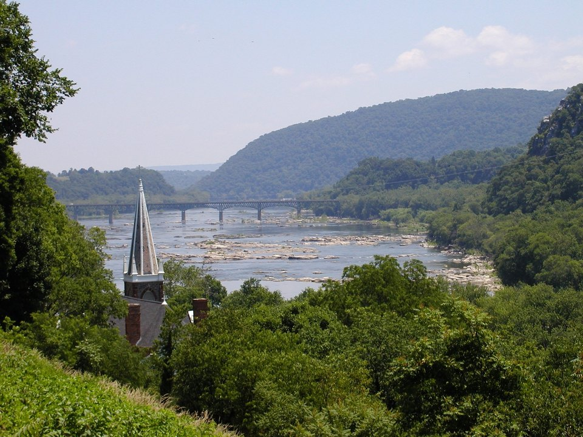

Lower town · Historic
The Town’s Inn
Rooms in a pair of buildings about 200 years old in Harpers Ferry’s historic lower town. Everything is walkable, including the trails and the rivers.
Official details for The Town’s InnWhere two rivers meet below the mountains.
Harpers Ferry sits where the Potomac and the Shenandoah join, its 19th-century lower town climbing a steep hillside below the Blue Ridge. Walk the national historical park, hike to the overlook on Maryland Heights, bike the C&O Canal towpath, and spend the evenings in Shepherdstown, a lively little college town nearby.

Time illustration: direct distance at 150 KTAS plus 15 minutes for departure and arrival, matching the discovery page. Use ForeFlight for your actual flight plan.
KMRB, Eastern West Virginia Regional (Shepherd Field), is a towered airport about 30 minutes from Harpers Ferry and 20 minutes from Shepherdstown.
170 Aviation Way, Martinsburg, WV 25405
The airport-owned FBO lists fuel, a crew car and Enterprise rentals, which pilots report can be delivered to the FBO. Call ahead to confirm the crew car, two-night parking and fees. No live fuel price is shown.
The Washington, DC SFRA and the Camp David prohibited area (P-40) lie to the east. Review the sectional and current NOTAMs carefully, and watch for temporary flight restrictions. Ridges run along the Blue Ridge to the south and east.
A historic inn in the lower town, or a riverside inn in Shepherdstown. Rates and availability need travel dates.
Rooms in a pair of buildings about 200 years old in Harpers Ferry’s historic lower town. Everything is walkable, including the trails and the rivers.
Official details for The Town’s InnA long-running inn on the bluffs above the Potomac in Shepherdstown, with river-view rooms and its own restaurant. A comfortable, romantic base.
Official details for The Bavarian InnA small bed and breakfast often recommended for couples. Confirm rooms, breakfast and how far it is from the lower town.
Official details for Lily Garden Bed & BreakfastA romantic country inn and spa outside Charles Town, about 20 minutes away, home to the Redbook restaurant. The area’s splurge.
Official details for Hillbrook InnPrices and availability for your dates, through our partner Stay22. This is an affiliate link: we may earn a commission at no cost to you. The picks above are never paid.
The best special-occasion dinner is in the countryside nearby. Reserve weekend dinners ahead.
A cozy, rustic gastropub in Harpers Ferry with a locally inspired menu. An easy first night after the flight.
Official details for The Rabbit HoleA romantic fine-dining room at the Hillbrook Inn near Charles Town, about 20 minutes away. Business casual attire is expected; reserve well ahead.
Official details for Redbook at Hillbrook InnA relaxed café and wine bar, good for lunch or a glass after a hike. For farm-to-table cooking instead, try Kelley Farm Kitchen in Bolivar.
Official details for Snallygasters Cafe & Wine BarMost of the best experiences here are outdoors. Wear good walking shoes.
The restored lower town, John Brown’s Fort and the museums tell the story of the armory, the 1859 raid and the Civil War. The rivers meet just beyond the main street.
Park informationA steep climb across the Potomac to the classic view down onto the town and the meeting of the rivers. Allow three to four hours round trip. For an easier walk, climb the stone steps to Jefferson Rock.
A flat, shaded path along the Potomac on the Maryland side, reached by the footbridge from town. Walk a few miles or rent bikes and ride.
In summer, River & Trail Outfitters runs tubing, rafting and canoe trips on the Shenandoah and Potomac, and rents bikes for the C&O Canal towpath. Book ahead and check river levels.
River & Trail OutfittersShepherdstown has shops, restaurants and an easy small-town evening. Antietam National Battlefield, site of the bloodiest single day of the Civil War, is about 15 minutes beyond it.
This prototype links to the county visitor site. It does not yet match events to your travel dates.
Tubing, paddling and long evenings by the water. Weekends are busy; arrive early to park.
The ridges around the rivers turn red and gold. The most beautiful and busiest season.
Harpers Ferry’s lower town celebrates the holidays with candlelit streets and seasonal events. Check dates.
Check the county visitor site when choosing a weekend, and confirm dates and tickets with the organizer.
A sample Friday–Sunday weekend: the lower town, a mountain overlook and a countryside dinner. No bookings or availability confirmed.
Land at KMRB mid-morning and pick up the crew car or a rental.
The lower town and the national historical park, with lunch in town.
A short walk to Jefferson Rock for the view, then back to the FBO.
Land at KMRB, subject to weather, nearby restricted airspace and your actual flight plan, and pick up the car.
Park at the visitor center, ride the shuttle down and wander the lower town and the rivers.
Dinner at The Rabbit Hole.
Hike Maryland Heights for the view, or walk the C&O Canal towpath.
Lunch and a glass of wine at Snallygasters, then a slow afternoon in Shepherdstown.
Dinner at Redbook at Hillbrook Inn.
Antietam National Battlefield, or Jefferson Rock and a last look at the rivers.
Return the car and allow time at the FBO.
Check the latest TFRs and NOTAMs before departure.
A bike ride on the C&O Canal towpath.
Antietam National Battlefield, or tubing on the river in summer.
Dinner and a stroll in Shepherdstown.
These details make the difference between an appealing list and a usable getaway.
Car and lodging first, then dinners and any river trip.
The DC SFRA and P-40 are nearby, and TFRs are common. Brief them carefully.
Lower-town parking is scarce. Use the national park visitor center and shuttle.
Rates, river trips and restaurant hours are date-dependent. No availability or live price is implied here.
Picks and links reviewed by WingAway Weekends. Hours, prices, menus and availability change often, so confirm directly with each place before booking. Spotted something out of date, or have a favorite we missed? Email us at hello@wingawayweekends.com.
WingAway Weekends helps you discover the destination. Use ForeFlight and current official aviation information for route, performance, weather, NOTAMs and preflight decisions. Flight planning and PIC responsibility stay with the pilot.
One fly-in weekend, a Fly to Lunch pick and the newest guides, about once a month.
Free. Unsubscribe anytime.